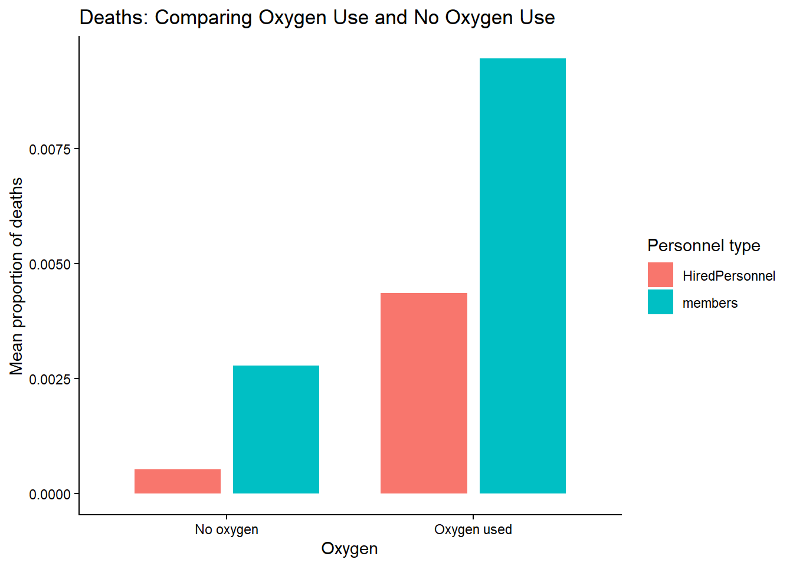
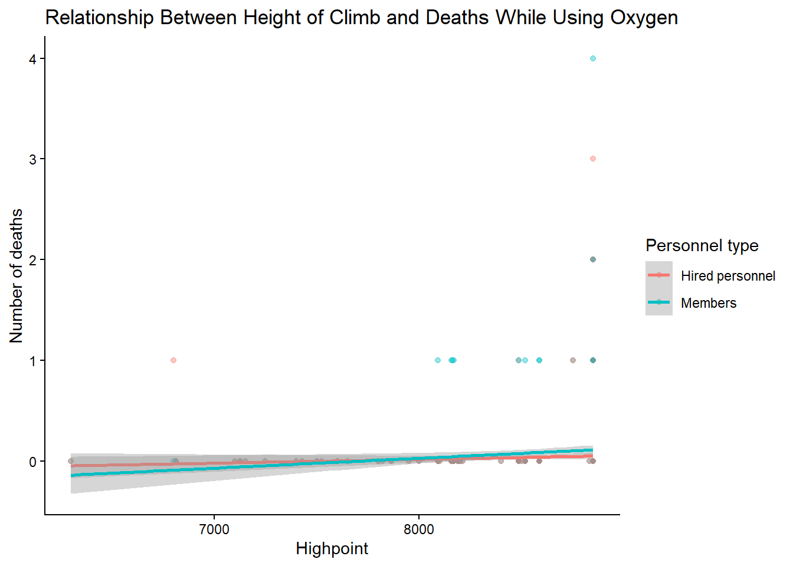
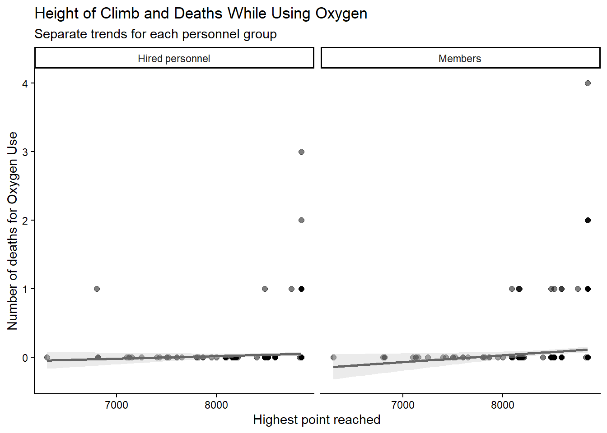

The Himalayan mountain range is home to the tallest set of mountains in the world. These giant beasts lure different expeditors from all around the world. However, such altitude can pose serious threats to people’s safety due to low oxygen levels. The mountains are notorious for claiming many deaths over the years. Nevertheless for the brave explorers, a set of highly trained and well equipped guides remain in service. However, death by the Himalayan in the media rarely mentions any deaths related to guides. This begs the question, are the deaths due to a lack of training? To solve this larger inquiry, we must first establish that guides are less likely to die on these mountains. However, when we unpack the data, the picture becomes blurry.
Given the low oxygen levels present, the use of oxygen masks can be interfering with death rates. Weirdly enough, more deaths are recorded for lay individuals than guides for oxygen use, but no difference is observed for those who do not use an oxygen mask.
But it may be that the individuals using oxygen are doing so because they are climbing to a greater altitude. Interestingly, for different altitudes we see no difference in death rate for guides and lay individuals using oxygen, implying that guides, even with their highly skilled training, are just as likely to die as expeditors. Therefore, it is not necessarily additional training that can help individuals survive, but rather that the harsh conditions of the mountains pity no one.
Let’s break down this further in the graphs below.
Accessible / Dynamic Outlet Version
To begin with, we ought to compare the number of individuals who died across expeditions, comparing between the guides (referred to as “Hired Personnel” and lay-individuals (referred to as “members”).
Show code
library(dplyr)library(tidyr)library(tidylog)library(tidyverse)data_exped <-read.csv("exped_tidy.csv",fileEncoding ="Windows-1252")#Removing the excess columns not needed for the first graphdata_exped_columnRemoved <- data_exped %>%select(c(EXPID, TOTMEMBERS, MDEATHS, TOTHIRED, HDEATHS, O2USED)) %>%filter(TOTMEMBERS !=0) %>%mutate(PercentDead_members = (MDEATHS/TOTMEMBERS),PercentDead_guides =if_else( TOTHIRED ==0,NA_real_, (HDEATHS / TOTHIRED) ) )#Calculating the averagesdeaths <- data_exped_columnRemoved %>%group_by(O2USED) %>%summarise(mean_members =mean(PercentDead_members, na.rm =TRUE),sd_members =sd(PercentDead_members, na.rm =TRUE),mean_HiredPersonnel =mean(PercentDead_guides, na.rm =TRUE),sd_HiredPersonnel =sd(PercentDead_guides, na.rm =TRUE),.groups ="drop" ) %>%pivot_longer(cols =-O2USED,names_to =c(".value", "Personnel"),names_pattern ="(mean|sd)_(members|HiredPersonnel)" )#Drawing the first graph:ggplot( deaths,aes(x =factor(O2USED),y = mean,fill = Personnel )) +geom_col(position =position_dodge(width =0.8),width =0.7 ) +labs(title ="Deaths: Comparing Oxygen Use and No Oxygen Use",x ="Oxygen",y ="Mean proportion of deaths",fill ="Personnel type" ) +scale_x_discrete(labels =c("FALSE"="No oxygen", "TRUE"="Oxygen used") ) +theme_classic()

Looking at this graph, it appears that more lay-individuals are dying than guides irrespective of oxygen mask usage. However, more guides are die on expedition where they use oxygen mask. This feels counter intutive to what one might expect. If the mountains are dangerous because of low oxygen levels, then using the oxygen mask should be lowering deaths not increasing it. This probes a further inquiry into the data specifically looking into oxygen usage.
One caveat to note is that these graphs are not analyzed using statistical techniques, so we cannot be confident that lay individuals’ deaths are statistically different from guides’ deaths. However, needlessly to say, the oxygen condition is garnering more deaths than the non-oxygen condition.
Show code
#Drawing the second graph:#Step 1: Deleting unnecessary columns and row, summarizing the datadata_exped_columnRemoved_Oxygen <- data_exped%>%select(c(EXPID, TOTMEMBERS, MDEATHS, TOTHIRED, HDEATHS, O2USED, HIGHPOINT))%>%filter(TOTMEMBERS !=0, O2USED !="FALSE")%>%mutate(PercentDead_members = (MDEATHS/TOTMEMBERS),PercentDead_guides =if_else( TOTHIRED ==0,NA_real_, (HDEATHS / TOTHIRED) ) )#Step 2: The graphdeaths_usingOxygen <- data_exped_columnRemoved_Oxygen%>%select(HIGHPOINT, MDEATHS, HDEATHS) %>%pivot_longer(cols =c(MDEATHS, MDEATHS, HDEATHS),names_to ="Personnel",values_to ="Deaths" ) %>%mutate(Personnel =recode( Personnel,"MDEATHS"="Members","HDEATHS"="Hired personnel" ) ) %>%filter(!is.na(HIGHPOINT), !is.na(Deaths))#The plotggplot( deaths_usingOxygen,aes(x = HIGHPOINT,y = Deaths,color = Personnel )) +geom_point(alpha =0.4) +geom_smooth(method ="lm",formula = y ~ x,se =TRUE ) +labs(title ="Relationship Between Height of Climb and Deaths While Using Oxygen",x ="Highpoint",y ="Number of deaths",color ="Personnel type" ) +theme_classic()

The first graph may give the illusion that simply using an oxygen mask is correlated with higher death rate. However, people may be using oxygen masks due to altitude change. Therefore, it is possible that the deaths associated in the oxygen mask conditions are the result of increased mountain altitude. When we delve further into the oxygen condition, and look at the association between deaths and altitude, we see no meaningful difference in death between guides and lay-individual. This implies that guides and lay-individuals are equally likely to die on the Himalayan mountains irrespective of their equipment, training, and even familiarity of the region. It appears to be that the mother-nature, herself, pose challenges and hardships that we, as a society, have not managed to fully overcome. Even with advance training and equipment, such a climb is dangerous and partial to no one.
Scientific Article Version
In order to assess differences in whether rate of death on the Himalayan mountains may be the caused by variant in training, first, we must establish whether a trained guides and lay-individuals vary their probability of dying on the mountain range.
A jitter-plot of the data, with a violin-plot overlay, was generated. The data does not appear to differ between the groups across conditions. Albeit, there is more data for mean proportion of deaths for the oxygen used condition. Although there is no meaningful difference, it may be that there is more nuance in the oxygen use condition. Given that oxygen use may indicate a change in altitude, this variable in association should be explored further.
Show code
#Graph 2: Visualizationggplot( deaths_usingOxygen,aes(x = HIGHPOINT,y = Deaths )) +geom_point(colour ="black",alpha =0.5,size =2 ) +geom_smooth(method ="lm",formula = y ~ x,colour ="grey40",fill ="grey80",se =TRUE ) +facet_wrap(~ Personnel) +labs(title ="Height of Climb and Deaths While Using Oxygen",subtitle ="Separate trends for each personnel group",x ="Highest point reached",y ="Number of deaths for Oxygen Use" ) +theme_classic()

Upon further inquiry, the regression for altitude and number of deaths appears to be a zero-slope regression line for both conditions. Therefore, an increase in altitude is not associated with deaths for both guides and lay individuals, implying that both groups are equally likely to perish irrespective of the pre-existing variance in training.